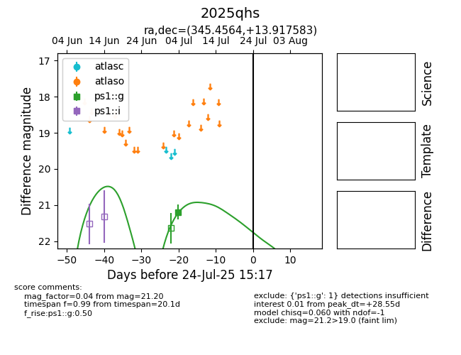

Target 2025qhs at 2025-07-24 15:17, see:
YSE: ziggy.ucolick.org/yse/transient_detail/2025qhs
alt names
2025qhs (yse)
coordinates:
equatorial (ra, dec) = (345.4564,+13.91758)
galactic (l, b) = (86.5798,-41.09057)
photometry
last ps1::g=21.20
1 ps1::g detections
